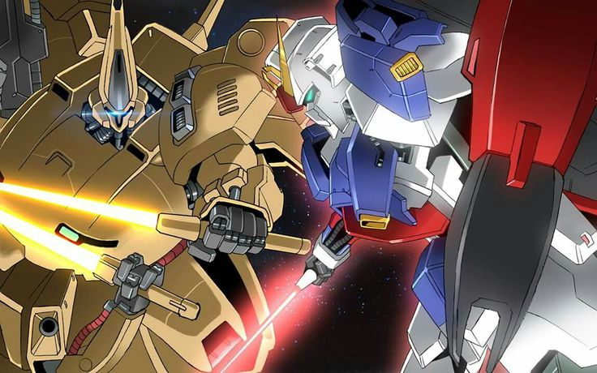
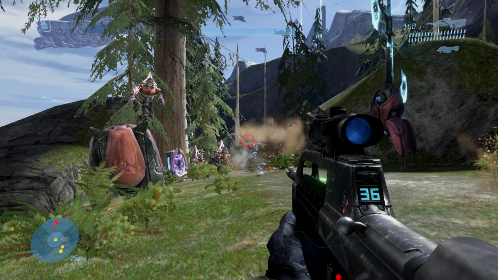

This webpage is reserved to showcase the multitude of hobbies of mine. This ranges from model kits to playing games.
At this webpage you are also able to interact with the hobbies in order to gather more information about the hobbies.
Model Kits / Gunpla
This hobby refers to the building and assembling model kits known as gunpla which are from the franchise called Gundam
The Master Grade 1/100
Hi-Zack is my very first gunpla kit and my introduction to this hobby.
This model kit requires you to follow instructions from a manual and nip the parts from a runner,
and lastly snap on the parts to assemble the final product which is the Hi-Zack kit. I had great pleasure in assembling this kit even if it took
6 hours. This model kit also came from one of my favorite series which is
Mobile Suit Zeta Gundam.
After getting my first gunpla, I felt very motivated to increase my collection with several different other gunpla kits there are out in the market.
With the additional knowledge of the franchise Gundam makes every time spent assembling a gunpla kit much more satisfying and valuable
After purchasing the MG Hi-Zack gunpla kit, i have decided to purchase more kits in order to expand on my hobby
collection. I was able to get my hands on the 1/100 scale MG Gundam Ground Type
from the show Mobile Suit Gundam: The 08th MS Team, in which is another show from the franchise that is Mobile Suit Gundam.
this gunpla kit has now been added to my collection with the Hi-Zack kit. With having acquired 2 gunpla kits, I was able to pose them both in poses I seem favoritable. It is facsinating to me how both model kits are able to
interact with each other and strike a fighting pose.
With these gunpla kits I was also able to re-enact scenarios and scenes that have been played it out during the Mobile Suit Gundam series.
It is interesting to have another perspective when it comes to seeing model kits fighting each other, striking each other with different articulated poses and taking a picture
from different angles to get awesome looking images.
Last but not least, the latest and most recent gunpla kit that I have purchased and added to my gunpla collection is the
High Grade 1/144 scale V2 Assault Buster Gundam which comes from the show Mobile
Suit Victory Gundam. Unlike the other previous MG gunpla that are already within my collection, this gunpla kit is alot smaller with the scale of 1/144 and the grade
of HG. Although its overall size is smaller, the weaponary and accessory it comes with is much more drastic than the Hi-Zack and Gundam Ground Type with its
posable potential relies more on a stand to carry its weight and for much more articulated poses.
Anime
This hobby refers to the activity of watching anime which are animated shows that comes from Japan
One of my favorite anime movies that I have watched, is the movie Mobile Suit Gundam: Hathaway Flash
it is an interesting movie that continues the timeline from the previous Mobile Suit Gundam installements from the Universal Century timeline with the lead main character named as Hathaway Noa, but known in the movie
as Mafty Navue Erin. The plot comes from Hathaway trying to end the corruption within the Earth Federation and move the residents of earth to live in space in order to clean and save the earth
pollution and destruction of mankind. This in return labels him as a wanted terrorist, now needing to fight against the Earth Federation while also needing to confront the challenges of his beliefs in his
own righteous mission
I really love this anime as it is able to display the several interesting characteristic and challenging plot points which is different from the norm of a Heroic Main Character.
Other than the interesting story, the music score and the action scenes including the mobile suits and the duel between the Xi Gundam and the Penelope Gundam was very cool. With
several layered messages for the viewers to examine and dig up the meaning behind scenes, make this anime a must watch especially if you're fan of the Gundam franchise
Another anime that I enjoyed watching is Mobile Suit Zeta Gundam.
This anime leads with the main character Kamille Bidan as part of the A.E.U.G fighting against the Titans which is an elite but corrupt unit of the Earth Federation that was
made to hunt down any remnants of the Zeon Forces after the first events of the One Year War during Mobile Suit Gundam
Kamille Bidan is a character trying to grow and understand the truth, while also always trying to lend a helping hand whenever possible, giving him a heroic main character lead role.
In the Mobile Suit Zeta Gundam show, there will recurring characters from the previous mentioned show, giving old fans some recognized characters, giving them development continuing from the previous entry.
This Gundam entry also takes place in the Universal Century, meaning the actions that take place in this show have impact for future entries such as Hathaway Flash.
Me and many Gundam fans around the world consider the Mobile Suit Zeta Gundam entry to be the best gundam in the entire franchise as a whole and it is easy to see it.
The characters there are interesting with great character development, the plot of the story is facsinating and continues from a previous entry allowing much more expansion to the current lore of the Universal Century.
and the mobile suits that are included in this show are interesting, with this show showcasing the very first transforming gundam and mobile suits.

Other than watching the Gundam anime franchise which I enjoy watching as a hobby, I also have recently picked up another anime that has caught my attention,
which is titled Uma Musume Cinderella Gray which is a spin off from its series
Uma Musume Pretty Derby. The story of this anime follows the main character Oguri Cap, a grey coat uma musume who wishes to become the strongest Uma Musume in all of Japan. Her journey starts
in the small town of Kasamatsu, as she races in the regional races with her friend Belno Light and her trainer, Kitahara Joe as they climb the ranks all the way to the central races.
The story is shown drastically different to the original Pretty Derby series as it takes a more serious tone and atmosphere.
Although the premise is one not of the norm, I actually really enjoyed the plots and pacing of this story. The additional fact that these characters are based on real life race horses with their
race record being reflected in the show allows the race history to be shown and learnt in a more modernized setting. I also really enjoyed the underdog story of Oguri Cap and how it is presented in this anime,
and the other side characters that are treated well and not abandoned after their part of the story.
Among my most favorite videogames, the Halo 3 is my top favorite. I have been playing this game
since at a young age, having a special value within myself. The Halo 3 videogame is the third entry to the Halo franchise, continuing the main character,
Master Chief journey to stop the enemy forces, the Covenant which is a faction of several aliens forces that want to exterminate the universe using the Halo Rings. The game is set as a First person Shooter,
taking control of Master Chief as he shoots down the Covenant stopping the destruction that the Halo Rings will bring alongside the UNSC and his Sangheilis ally and their Arbiter.
I really enjoyed the story as it finishes the trilogy with a variety of interesting campaign missions. This game also allows splitscreen gameplay as most of my time playing this game is when
I played alongside my siblings and had a fun time. Halo 3 also offers a multiplayer gamemode to those who seek some multiplayer player vs player thrills

Another videogame that I have recently bought and played, is the Gundam Battle Alliance game. This is an action RPG video game set in the Gundam franchise universe, covering Most Gundam entries
from the Gundam Universal Century entries, to Gundam Iron Blooded Orphan. The mobile suit models in this game is set to be a SD size, akin to something small. It is a very interesting
game as it allows interaction between different Gundam protaganist according to their personality such as Kamille Bidan and Hathaway Noa / Mafty Navue Erin, while also being in control of multiple different mobile suits from
the original RX78-2 Gundam piloted by Amuro Ray to a much more modern mobile from a more recent gundam series such as the FA78-2 Full Armor Gundam piloted by Io Flemming
As a Gundam fan myself, I really enjoyed this game because you are able to pick from a wide variety of mobile suits and play as your favorite ones mowing down the enemy forces. It has a quite fun and addicting gameplay, grinding to the highest
level to become the strongest Gundam with challenging levels and bosses that test your limits.
Other than the previous videogames, one of another videogame that has a special place within all of my videogames is Ace Combat 7: Skies Unknown from its franchise Ace Combat.
This game focuses on the main character that goes by the callsign "Trigger", a fighter pilot for the Osean Federation as he has to fight the Erusean Military to retake back the space elevator. The game features a huge variety of fighter
jets to pilot from, ranging from old, to modernized fighter jets and even futuristic fictional jets. It has high adrenaline pumping gameplay with high octane speeds and manoeuvres, dogfighting aces and destroying fortresses.
I really love playing this videogame as my hobby as it offers a huge amount of playstyles and difficulties. Not to mention the feeling of being a fighter pilot pulling off intensive movesets, dodging missiles and defeating ace pilots have a very nice feeling to it.
It is one of the greatest arcade fighter jet games out there.